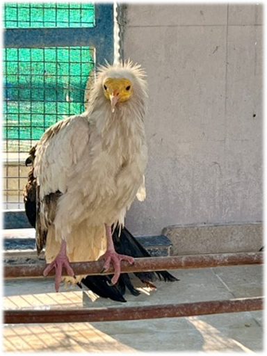
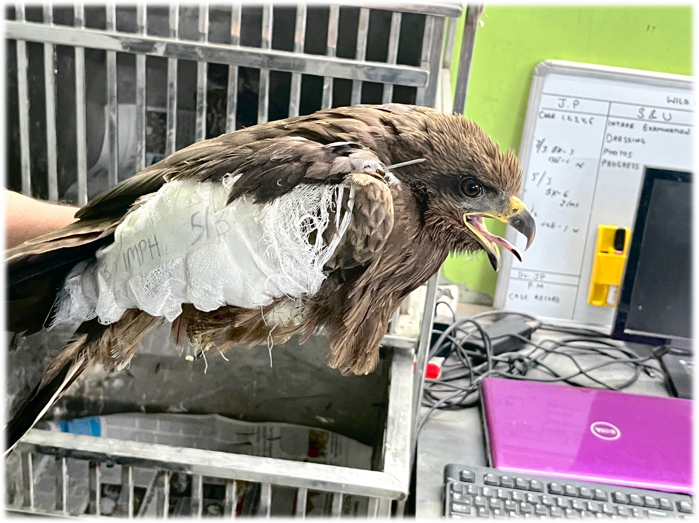

When people ask me, “What’s the best thing about being an airline pilot?” I often hesitate—not because I don’t know the answer, but because there are too many. How do you pick just one when every flight holds the promise of something extraordinary?
This past year, I lived one of those extraordinary moments—one that captured everything I love about flying.
It began on a flight home from a family vacation. Somewhere over the Pacific, nestled in the cocoon of our United Dreamliner, I found myself riveted by a documentary playing on the seat-back screen. All That Breathes told the story of two brothers, Nadeem and Saud, navigating the bustling chaos of Delhi. Their lives revolved around rescuing injured wild birds of prey, particularly the black kite—a bird that thrived in the urban sprawl yet often fell victim to its dangers.
The brothers’ quiet determination struck a chord deep within me. The way they handled each bird, their fingers deftly cleaning wounds or adjusting broken wings, reminded me of a moment from my own past.
I grew up in the rugged mountains of Central Argentina, where flight wasn’t something you watched—it was something you felt. As a teenager, I soared through the sky on hang gliders, the wind carving patterns on my cheeks as the earth dropped away below. But it wasn’t the flight itself that enchanted me; it was the company. I’d watch hawks and falcons glide alongside me, their feathers shifting like spoilerons to extract the maximum lift from the air currents. Those moments stitched a connection between me and nature—a bond that would shape my future in ways I couldn’t yet imagine.
That bond followed me across continents to Colorado, where my wife and I made a home reminiscent of our roots in the Argentine mountains. One morning, from our kitchen window, we saw a group of kids huddled in the open space behind our house. As I approached, I realized they were crowded around an injured owl, its wide eyes filled with pain. The kids had shot at it with their BB guns.
“We can’t leave it like this,” I told them. Together, we carefully placed the bird in a box and rushed it to the Birds of Prey Foundation in Broomfield, CO. Months later, when the foundation invited me to release the owl back into the wild, I felt something awaken in me—a quiet reverence for these creatures and their tenuous connection to the world we share.
So, as I sat on that flight, watching Nadeem and Saud dedicate their lives to the black kites of Delhi, something clicked. I felt the pull of their mission as if it were my own.
By an incredible twist of “airline fate,” a few days later, I found myself in Delhi on my very next flight assignment. As our Dreamliner touched down at Indira Gandhi International Airport, the air was thick with humidity and spices, and the chaotic symphony of car horns let me know I was back in India.
On my way to the Wildlife Rescue Foundation, it felt surreal to think that just days earlier, I had been thousands of miles away, captivated by their story on a screen. Now, here I was, about to meet them in person.
When I arrived, Nadeem greeted me with a warm handshake. A couple of days before the trip, I had reached out to the foundation and asked if they’d mind my visit.
“You’ve come a long way to see us,” he said, his voice carrying the lilting rhythm of Delhi’s streets.
I watched as he, Saud, and their team moved through their facility. Their work was awe-inspiring. Injured birds were everywhere. Here, a broken wing was splinted. There, a kite was coaxed into eating. Their passion was palpable, their humility disarming.
“I’ve always dreamed of flying,” Nadeem admitted as we stood on the roof, watching the kites circle the city.
His words stayed with me. Flying had been my escape, my passion. Could I give that gift to someone who had spent his life helping creatures take to the skies?
The opportunity came months later when Nadeem visited the U.S. for a documentary screening tour. By a stroke of luck, he had a free day while in New York—and so did I.
On the day of our planned flight, the sky over Putnam Valley, where Nadeem was staying, was a stubborn gray, heavy with drizzle.
“We won’t be able to fly in this,” Nadeem said, his disappointment evident.
“Let’s drive west,” I suggested, knowing the weather would change as we headed out. After all, that’s what pilots do—we check the forecast.
And the weather did change. As we approached the airfield, the gray gave way to blue, and the sun painted the horizon with gold. Thermals rose lazily from the earth, promising perfect soaring conditions.
The air was bumpy during the tow, but after releasing the tow plane, it became quiet. We soared together, tracing the thermals as the earth below unfolded like a patchwork quilt of fields and forests. As we climbed higher, I made tight turns to stay in the rising air that kept us aloft. Each spiral brought us closer to the clouds, the air alive with invisible currents of lift.
Nadeem sat quietly, absorbing the experience with wide-eyed wonder, his gaze shifting between the horizon and the earth far below.
Breaking the silence, I turned to him. “This,” I said, as the glider banked smoothly into another turn, “is how the kites soar.” My words seemed to resonate deeply, giving voice to the emotions he was quietly holding. In that moment, it felt as though we had become part of the very nature he has spent his life protecting.
With this extraordinary shared experience, I understood what Argentine poet Horacio Ferrer meant by “eternal moments”—flashes of life so profound they linger until your last breath.
For me, that flight wasn’t just about sharing my passion with someone new. It was a reminder of why I chose this career—the chance to connect, to inspire, and to experience moments that transcend the ordinary.
As pilots, we make sacrifices—missed holidays, sleepless nights, time away from loved ones. But for experiences like these? It’s worth every bit of it.